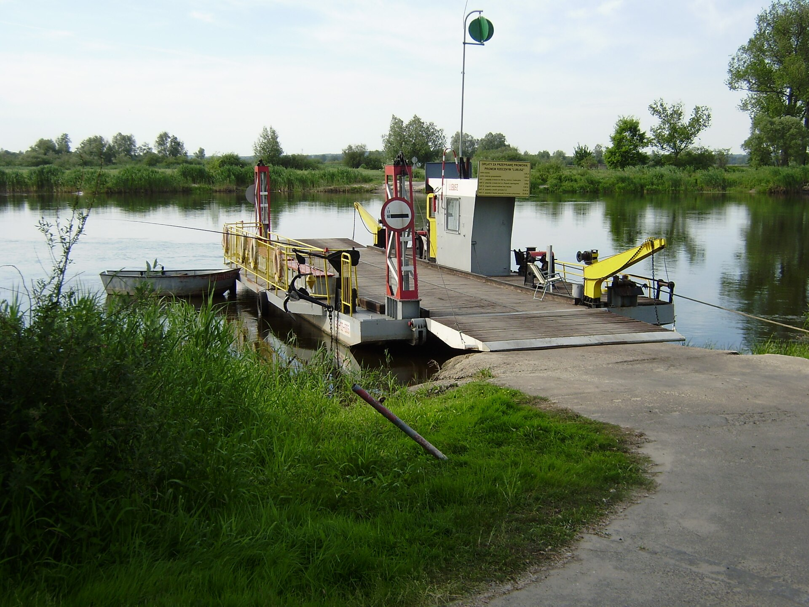

Przeprawa promowa Wydra
O naszej przeprawie
Nasza przeprawa łączy Brzeg Górny z Kępą Łąkową przez rzekę Mętną. Prom jest ręczny, ciągnięty po linie rozpiętej nad wodą, i płynie się nim około 6 minut. Mieści 12 osób i 2 rowery. Samochodów nie wozimy, motocykli też nie.
Pływamy od 1 maja do 30 września. Przy wysokiej wodzie prom stoi, a stan rzeki każdy może sam sprawdzić w serwisie hydrologicznym IMGW Serwis hydrologiczny IMGW
Nasz prom prezentuje się następująco:

Fot. Piotr Jarszewski,
Źródło zdjęcia,
CC BY-SA 3.0
Kolejność przeprawy
- Zadzwonić dwa razy dzwonem na słupie przy kładce.
- Poczekać, aż przewoźnik podpłynie i przycumuje prom.
- Wejść na prom po trapie.
- Postawić rower przy burcie, trzymać go za kierownicę i usiąść na ławce.
- Zapłacić przewoźnikowi przed odbiciem od brzegu.
- Wysiąść na drugim brzegu na znak przewoźnika.
Na promie nie wolno:
- Wchodzić z psem bez smyczy.
- Stać przy linie.
- Skakać z promu do wody.
- Wnosić szkła.
- Płynąć dzieciom do lat 10 bez opieki dorosłego.
Słowniczek przeprawy:
- Przewoźnik:
- Osoba, która prowadzi prom i odpowiada za pasażerów.
- Trap:
- Pomost między brzegiem a promem.
- Lina prowadząca:
- Stalowa lina nad rzeką, po której prom przesuwa się z brzegu na brzeg.
- Cumowanie:
- Przywiązanie promu do brzegu.
- Kępa:
- Wyspa albo kawałek lądu, który przy wysokiej wodzie bywa zalewany.
Zobacz regulamin przeprawy
.JPG){kind=link}